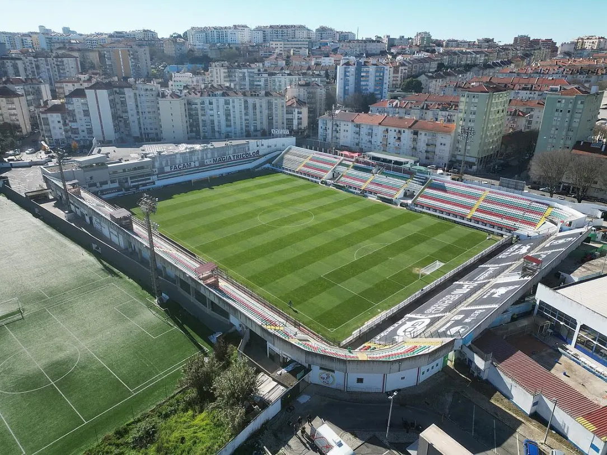

Treinador: Cristiano Bacci
A trajetória de Cristiano Bacci é definida por uma sólida maturidade tática e uma invulgar capacidade de organização coletiva, afirmando-se como um treinador de perfil metódico, resiliente e estrategicamente rigoroso.
Estádio: José Gomes
O Estádio José Gomes ergue-se como um baluarte da identidade da Amadora, pautado por uma mística urbana invulgar e uma proximidade orgânica entre a bancada e o relvado, afirmando-se como um recinto de perfil vibrante, carismático e resiliente.

Estilo de Jogo:
Em maio de 2026, o estilo de jogo de Cristiano Bacci no Estrela da Amadora é marcado por uma abordagem de emergência e pragmatismo, dado que assumiu a equipa a apenas três jornadas do fim do campeonato para lutar contra a despromoção.
"Sempre Tricolores!"